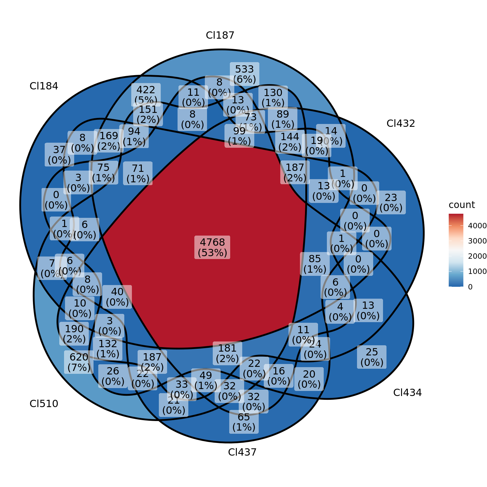

#library(COTAN)
#options(parallelly.fork.enable = TRUE)
#library(Seurat)
#library(monocle3)
#library(reticulate)
library(ggplot2)
library(stringr)
library(dplyr)
dirOut <- "Results/GeneExpressionExploration/"
if (!exists(dirOut)) {
dir.create(dirOut)
}
dataSetDir <- "Data/MouseCortexFromLoom/SingleClusterRawData/"Explorative analysis of gene expression
df <- NA
for (dataSetName in list.files(dataSetDir)) {
print(dataSetName)
name <- str_split(dataSetName,pattern = "_", simplify = T)[1]
cluster.name <- str_split(name,pattern = "e", simplify = T)[1]
time.point <- paste0("E",str_split(name,pattern = "e", simplify = T)[2])
dataSet <- readRDS(paste0(dataSetDir,dataSetName))
print(dim(dataSet))
message(dim(dataSet))
df.temp <- as.data.frame(list("RowSums"=rowSums(dataSet)))
df.temp$N.cells <- dim(dataSet)[2]
df.temp$genes <- rownames(df.temp)
df.temp$log10_exp <- log10((df.temp$RowSums+1)/df.temp$N.cells)
df.temp$cluster <- cluster.name
df.temp$time.point <- time.point
df <- rbind(df,df.temp)
}[1] "Cl184e13.5_ForebrainDorsalRawData.RDS"
NULL
[1] "Cl187e13.5_ForebrainDorsalRawData.RDS"
[1] 13972 334
[1] "Cl428e15.0_ForebrainDorsalRawData.RDS"
[1] 13857 318
[1] "Cl432e13.5_ForebrainDorsalRawData.RDS"
[1] 13972 536
[1] "Cl432e15.0_ForebrainDorsalRawData.RDS"
[1] 13857 586
[1] "Cl434e13.5_ForebrainDorsalRawData.RDS"
[1] 13972 326
[1] "Cl434e15.0_ForebrainDorsalRawData.RDS"
[1] 13857 273
[1] "Cl437e13.5_ForebrainDorsalRawData.RDS"
[1] 13972 259
[1] "Cl437e15.0_ForebrainDorsalRawData.RDS"
[1] 13857 258
[1] "Cl505e17.5_ForebrainDorsalRawData.RDS"
[1] 13971 203
[1] "Cl508e15.0_ForebrainDorsalRawData.RDS"
[1] 13857 397
[1] "Cl509e15.0_ForebrainDorsalRawData.RDS"
[1] 13857 402
[1] "Cl510e13.5_ForebrainDorsalRawData.RDS"
[1] 13972 248
[1] "Cl510e15.0_ForebrainDorsalRawData.RDS"
[1] 13857 402
[1] "Cl516e17.5_ForebrainDorsalRawData.RDS"
[1] 13971 297 df <- df[2:nrow(df),]
df$cl_time <- paste0(df$cluster,"_",df$time.point)d_bg <- df[,-5]
ggplot(df[df$time.point == "E13.5",],
aes(x = log10_exp, fill = cluster)) +
geom_histogram(data = d_bg,
fill = "grey", alpha = .8,binwidth = 0.1/6) +
geom_histogram(colour = "black",binwidth = 0.1) +
facet_wrap(~ cluster) + ylim(0,2500)+
guides(fill = FALSE) + # to remove the legend
theme_bw() 
ggplot(df[df$time.point == "E15.0",],
aes(x = log10_exp, fill = cluster)) +
geom_histogram(data = d_bg,
fill = "grey", alpha = .8,binwidth = 0.1/6) +
geom_histogram(colour = "black",binwidth = 0.1) +
facet_wrap(~ cluster) + ylim(0,2500)+
guides(fill = FALSE) + # to remove the legend
theme_bw() 
ggplot(df[df$time.point == "E17.5",],
aes(x = log10_exp, fill = cluster)) +
geom_histogram(data = d_bg,
fill = "grey", alpha = .8,binwidth = 0.1/6) +
geom_histogram(colour = "black") +
facet_wrap(~ cluster) +ylim(0,2500)+
guides(fill = FALSE) + # to remove the legend
theme_bw() 
venn <- list("Cl184" = df[df$log10_exp > -1 & df$time.point == "E13.5" & df$cluster == "Cl184",]$genes,
"Cl187" = df[df$log10_exp > -1 & df$time.point == "E13.5" & df$cluster == "Cl187",]$genes,
"Cl432" = df[df$log10_exp > -1 & df$time.point == "E13.5" & df$cluster == "Cl432",]$genes,
"Cl434" = df[df$log10_exp > -1 & df$time.point == "E13.5" & df$cluster == "Cl434",]$genes,
"Cl437" = df[df$log10_exp > -1 & df$time.point == "E13.5" & df$cluster == "Cl437",]$genes,
"Cl510" = df[df$log10_exp > -1 & df$time.point == "E13.5" & df$cluster == "Cl510",]$genes)
library(ggVennDiagram)
ggVennDiagram(
venn,
#fill_color = c("#0073C2FF", "#EFC000FF", "#868686FF","#009E73","#993E83","#007310FF"),
stroke_size = 0.5, set_name_size = 4
)+ scale_fill_distiller(palette = "RdBu")
sessionInfo()R version 4.3.2 (2023-10-31)
Platform: x86_64-pc-linux-gnu (64-bit)
Running under: Ubuntu 20.04.6 LTS
Matrix products: default
BLAS: /usr/lib/x86_64-linux-gnu/blas/libblas.so.3.9.0
LAPACK: /usr/lib/x86_64-linux-gnu/lapack/liblapack.so.3.9.0
locale:
[1] LC_CTYPE=C.UTF-8 LC_NUMERIC=C LC_TIME=C.UTF-8
[4] LC_COLLATE=C.UTF-8 LC_MONETARY=C.UTF-8 LC_MESSAGES=C.UTF-8
[7] LC_PAPER=C.UTF-8 LC_NAME=C LC_ADDRESS=C
[10] LC_TELEPHONE=C LC_MEASUREMENT=C.UTF-8 LC_IDENTIFICATION=C
time zone: Europe/Rome
tzcode source: system (glibc)
attached base packages:
[1] stats graphics grDevices utils datasets methods base
other attached packages:
[1] ggVennDiagram_1.5.0 Matrix_1.6-3 dplyr_1.1.2
[4] stringr_1.5.0 ggplot2_3.4.2
loaded via a namespace (and not attached):
[1] vctrs_0.6.3 cli_3.6.1 knitr_1.43 rlang_1.1.1
[5] xfun_0.39 stringi_1.8.1 generics_0.1.3 jsonlite_1.8.7
[9] labeling_0.4.2 glue_1.6.2 colorspace_2.1-0 htmltools_0.5.7
[13] scales_1.3.0 fansi_1.0.4 rmarkdown_2.24 grid_4.3.2
[17] evaluate_0.21 munsell_0.5.0 tibble_3.2.1 fastmap_1.1.1
[21] yaml_2.3.7 lifecycle_1.0.3 compiler_4.3.2 RColorBrewer_1.1-3
[25] htmlwidgets_1.6.2 pkgconfig_2.0.3 rstudioapi_0.15.0 farver_2.1.1
[29] lattice_0.22-5 digest_0.6.33 R6_2.5.1 tidyselect_1.2.0
[33] utf8_1.2.3 pillar_1.9.0 magrittr_2.0.3 withr_2.5.0
[37] tools_4.3.2 gtable_0.3.3